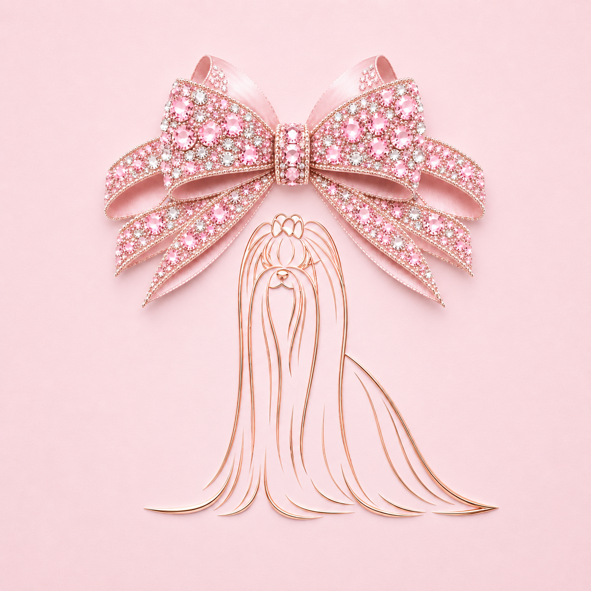
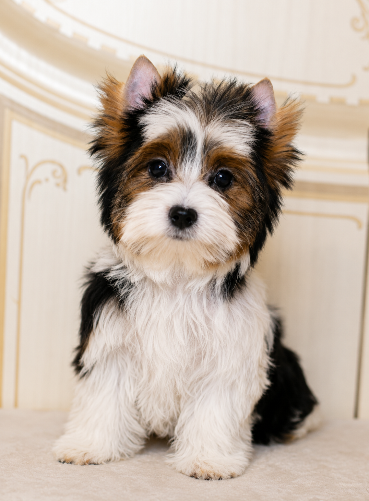
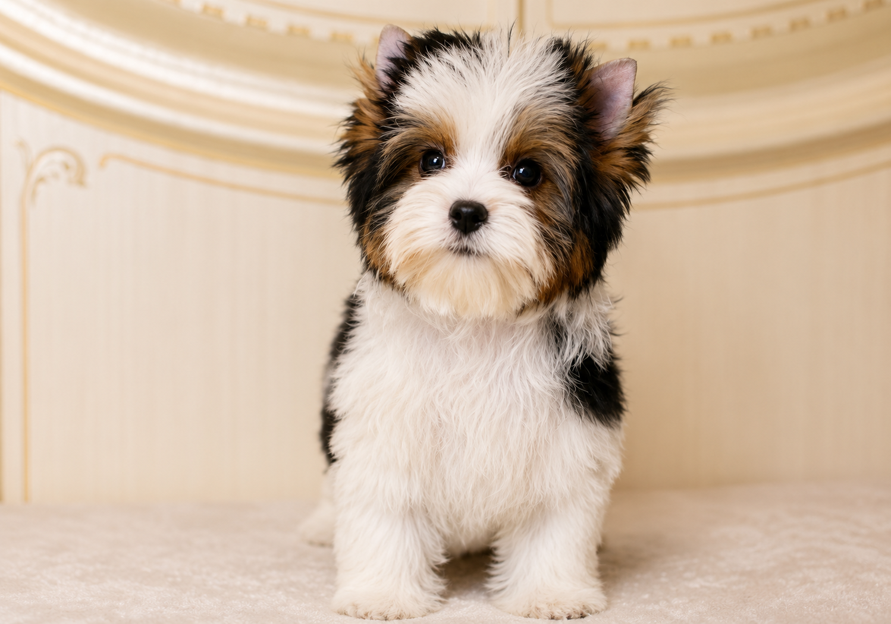
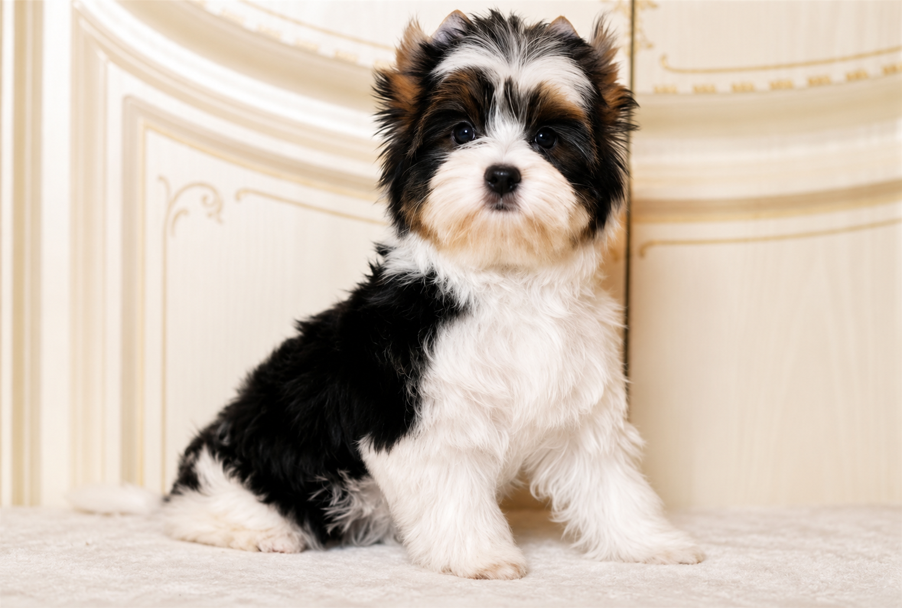
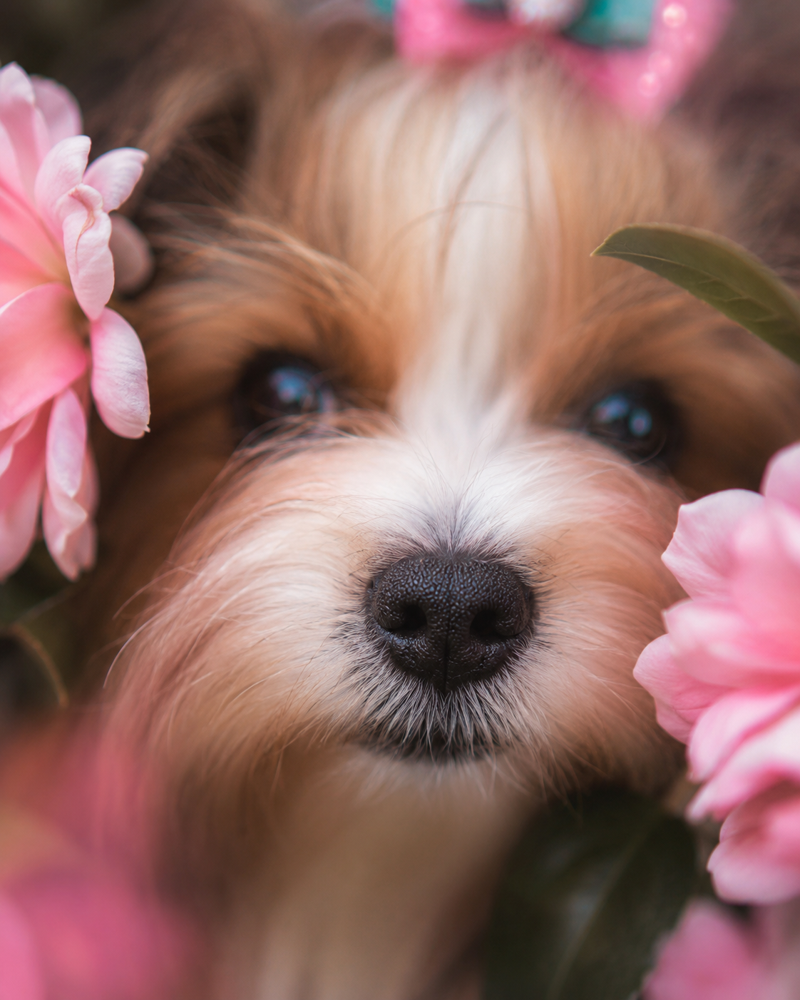
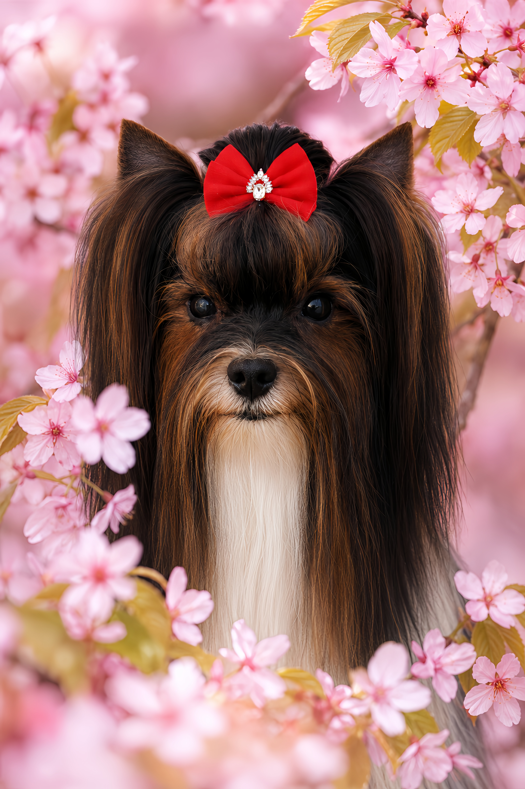
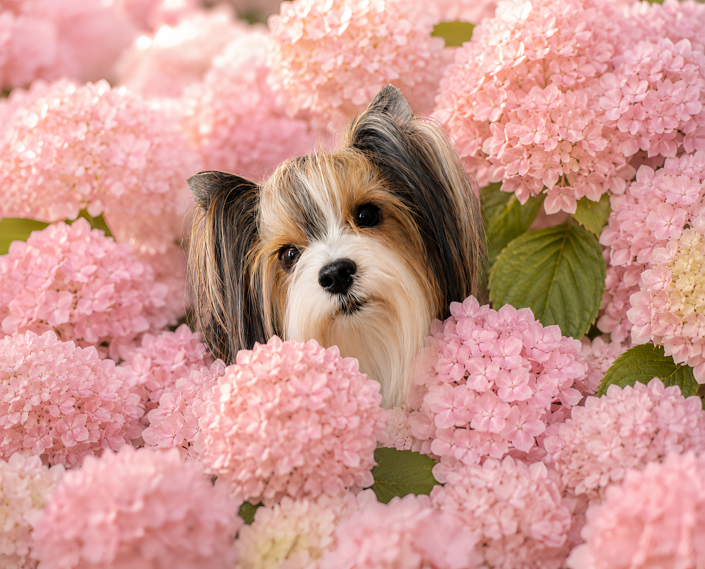
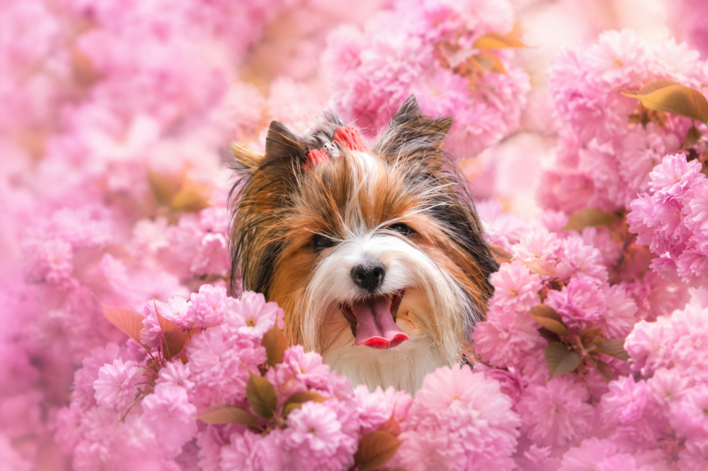
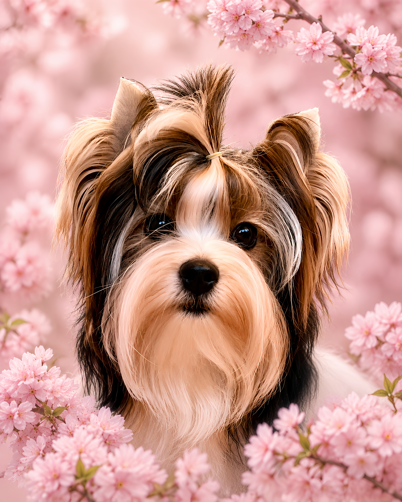

Dara
Vesela, razigrana in polna energije. Svet raziskuje z navdušenjem.

Biewer terierji
Lepota, zdravje in značaj v malem pasjem srcu.
Srečni. Veseli. Včasih skuštrani. Vedno ljubljeni.
Naši štirinožni družinski člani so vedno na prvem mestu.
Odkrijte našo zgodbo ↓Nekatere zgodbe se začnejo z enim samim pogledom. Naša se je začela z drobnimi tačkami, velikim srcem in ljubeznijo do biewer terierjev. Vsak od naših psov je drugačen, vsak nas je nečesa naučil in vsak od njih je pustil svoj pečat v naši zgodbi.
Lalani d'Or ni le predstavitev naših psov. Je prostor, kjer želimo deliti naš pogled na odgovorno vzrejo, spoštovanje njihove individualnosti ter veselje do skupnega življenja z njimi. Verjamemo, da zdravje, značaj in dobro počutje vedno pomenijo več kot kateri koli naslov ali pokal.
Odkar pomnim, me spremljajo psi. Ob njih sem odraščala, se učila odgovornosti, doživljala prve razstavne uspehe in spoznavala, da največje zmage pogosto nimajo nič skupnega s pokali in naslovi.
Moja mama in teta sta vzrejali in razstavljali škotske ovčarje. Prva psička je bila v Slovenijo pripeljana iz Anglije, sama pa sem že kot otrok sodelovala v razredu »otrok in pes«, današnjem junior handlingu.
Čeprav me je kasneje pot zanesla v šport, so psi ostali moji zvesti spremljevalci skozi vse življenje.
Nekega dne me je med brskanjem po Pinterestu očarala fotografija majhnega kužka, podobnega yorkshirskemu terierju, a povsem drugačnih barv. Bil je Biewer Terrier. Začelo se je raziskovanje, ki je trajalo ure in ure.
Pred menoj se je odpiral povsem nov svet – svet pasme, ki je bila takrat v Sloveniji skoraj nepoznana.
Naša zgodba se ni začela z vzrejo, temveč z ljubeznijo do pasme Biewer terier.
Aprila 2021 so v naše življenje prišle tri majhne kepice sreče iz Belorusije – Dasha, Leny in Lenka. Stare so bile skoraj pet mesecev.
Njihova pot ni bila kratka – najprej z vlakom do Rusije, nato z letalom do Letališča Jožeta Pučnika v Ljubljani.
Mi pa smo čakali. Tri dolge ure. Zaradi uvozne dokumentacije in veterinarskega pregleda se je čakanje zdelo neskončno.
Ko so se končno odprla vrata in smo jih zagledali, je bilo vse pozabljeno. Bile so doma.
Takrat še nismo vedeli, da se je tistega dne začela zgodba, ki jo živimo še danes. Ne le zgodba o pasmi Biewer terier, temveč zgodba o prijateljstvu, zaupanju in neštetih nepozabnih trenutkih, ki so jih v naša življenja prinesli naši psi.
Takrat si še nismo predstavljali, koliko veselja, smeha, neprespanih noči, razstavnih uspehov in življenjskih lekcij nam bodo prinesli. Vsak od njih nas je nečesa naučil in prav vsak je pustil svoj neizbrisen pečat v naši zgodbi.
Danes Lalani d'Or ni le ime.
Je zgodba o družini, o sprejemanju različnosti in o ljubezni do psov, ki jih ne želimo spreminjati, temveč jih imamo radi takšne, kot so.



Največji dosežek ni osvojeni naslov, temveč zdrav, srečen in ljubljen pes.
Noben ni prvi in noben ni zadnji. Vsak od njih je del naše zgodbe.
Vesela, razigrana in polna energije. Svet raziskuje z navdušenjem.

Nežna dama, ki s svojo eleganco in značajem vedno znova očara.

Nežna in ljubeča družinska psička, ki uživa v preprostih skupnih trenutkih.

Poseben fant, ki nas je naučil spoštovati individualnost vsakega psa.

Eleganten in nežen fant z velikim srcem.

Prava dama, ki s svojo eleganco in toplino vedno znova očara.

Nežna dušica z velikim srcem, ki s svojo toplino polepša vsak naš dan.
Za odgovorno vzrejo ni dovolj ljubiti pasmo. Potrebno jo je tudi razumeti.
Genetska testiranja niso zagotovilo popolnosti, temveč pomembno orodje za premišljene odločitve. Zato želimo govoriti tudi o genetskih boleznih, ki so lahko prisotne v pasmi, o zdravstvenih pregledih in odgovornosti do prihodnjih generacij.
Včasih je najbolj odgovorna odločitev tudi tista, da pes ni vključen v vzrejo. In tudi takrat ostaja enako ljubljen član naše družine.
ki jih bomo vedno nosili v srcu
Razstave so lep del naše zgodbe, vendar nikoli ne bodo pomembnejše od zdravja, sreče in kakovosti življenja naših psov.
Naše prvo leglo
1. decembra 2022
Dara Sweet Kalena • Dali Of Beautiful Nani • Diva Sweet Love • Demi Love Of Ipo
Drugo leglo pasme Biewer Terrier,skoteno v Sloveniji.
PREBERI VEČ →
Vsako leglo je zgodba zase in si zasluži svoj prostor.
Srečni. Veseli. Včasih skuštrani. Vedno ljubljeni.
Obljubljamo, da bomo pri vseh svojih odločitvah na prvo mesto vedno postavili dobro počutje naših psov. Zdravje, značaj in kakovost njihovega življenja nam bodo vedno pomenili več kot kateri koli razstavni naslov ali vzrejni uspeh.
Mladičev ne rezerviramo ob rojstvu. Verjamemo, da nam vsak mladič v prvih mesecih svojega življenja pokaže, kdo v resnici je. Zato si pri odločitvah vzamemo čas in mu dovolimo, da se razvija po svoji poti.
Najprej naši štirinožni družinski člani. Vedno.
Veseli bomo vašega sporočila, vprašanj o naših štirinožnih družinskih članih ali pogovora o življenju z biewer terierji.
Če vas zanima prihodnje leglo, vas vabimo, da se nam najprej predstavite. Verjamemo, da se najlepše zgodbe začnejo z iskrenim pogovorom in medsebojnim zaupanjem.